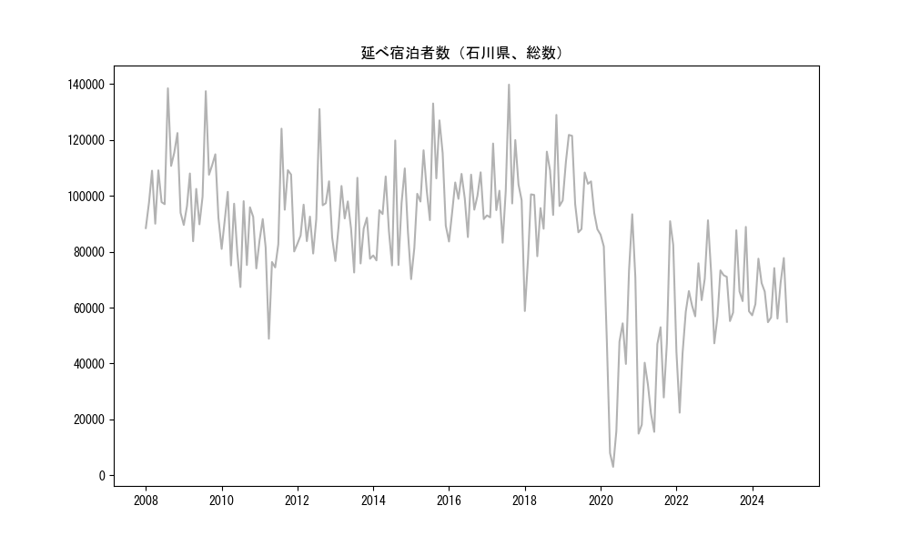
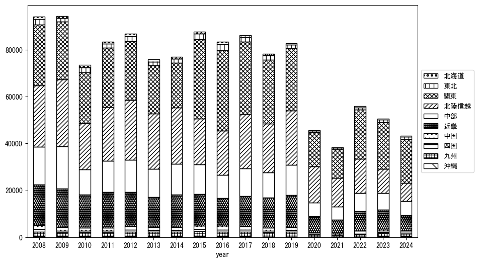
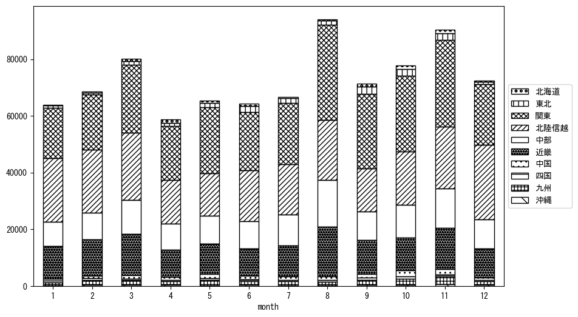

-
トップ
-
石川県
石川県
１．延べ宿泊者（総数）の推移
時系列グラフ

図１：石川県内の従業員数100人以上の宿泊施設での延べ宿泊者数（国外、居住地不詳を含む総数）。
基本統計量
表１：従業員数100人以上の宿泊施設での延べ宿泊者の総数（国外、および居住地不詳を含む）に関する基本統計量。単位は人泊。平均は１か月あたりの平均値を表す。図１に対応。
| 2008年 |
105,849 |
14,716 |
88,477 (1月) |
138,495 (8月) |
| 2009年 |
102,726 |
14,565 |
83,772 (4月) |
137,466 (8月) |
| 2010年 |
85,790 |
11,580 |
67,368 (7月) |
101,438 (3月) |
| 2011年 |
87,964 |
19,536 |
48,868 (4月) |
124,052 (8月) |
| 2012年 |
94,030 |
13,889 |
79,364 (6月) |
131,063 (8月) |
| 2013年 |
88,365 |
11,039 |
72,575 (7月) |
106,479 (8月) |
| 2014年 |
91,928 |
14,674 |
75,106 (7月) |
119,831 (8月) |
| 2015年 |
102,560 |
18,380 |
70,197 (1月) |
133,069 (8月) |
| 2016年 |
98,060 |
8,424 |
83,667 (1月) |
108,432 (11月) |
| 2017年 |
103,782 |
15,407 |
83,235 (6月) |
139,810 (8月) |
| 2018年 |
95,247 |
18,552 |
58,786 (1月) |
128,977 (11月) |
| 2019年 |
102,156 |
12,250 |
86,962 (6月) |
121,819 (3月) |
| 2020年 |
51,900 |
30,763 |
3,028 (5月) |
93,420 (11月) |
| 2021年 |
40,999 |
25,029 |
14,912 (1月) |
90,937 (11月) |
| 2022年 |
60,440 |
17,799 |
22,409 (2月) |
91,262 (11月) |
| 2023年 |
66,415 |
12,725 |
47,236 (1月) |
88,898 (11月) |
２．宿泊者数の重心（年平均の推移）
図２：石川県内の従業員数100人以上の宿泊施設での宿泊者数（国外、居住地不詳を除く）の重心（年平均の推移）。
全画面表示
重心の前年平均からの移動距離と方位、および緯度・経度
表２：重心の前年平均からの移動距離と方位、および緯度・経度。図２に対応。
| 2008年 |
— |
— |
35.7686 |
137.2949 |
| 2009年 |
北西 |
5.1km |
35.7948 |
137.2481 |
| 2010年 |
東 |
9.7km |
35.7812 |
137.3540 |
| 2011年 |
東南東 |
3.2km |
35.7667 |
137.3849 |
| 2012年 |
北北西 |
5.8km |
35.8114 |
137.3509 |
| 2013年 |
西 |
9.6km |
35.7946 |
137.2465 |
| 2014年 |
西 |
5.8km |
35.7895 |
137.1822 |
| 2015年 |
東 |
37.7km |
35.7597 |
137.5974 |
| 2016年 |
東北東 |
13.4km |
35.7926 |
137.7402 |
| 2017年 |
西 |
18.6km |
35.8086 |
137.5352 |
| 2018年 |
南西 |
1.4km |
35.8000 |
137.5236 |
| 2019年 |
西 |
10.0km |
35.7871 |
137.4139 |
| 2020年 |
北西 |
7.8km |
35.8332 |
137.3482 |
| 2021年 |
東南東 |
9.3km |
35.8073 |
137.4459 |
| 2022年 |
東 |
14.2km |
35.7838 |
137.5998 |
| 2023年 |
南南西 |
13.3km |
35.6681 |
137.5599 |
運輸局別延べ宿泊者数
時系列（年平均）

図３：石川県内の従業員数100人以上の宿泊施設での１か月あたり平均宿泊者数（国外、居住地不詳を除く）の運輸局別内訳。
寄与度（前年からの変化率に対する）
 図４：石川県内の従業員数100人以上の宿泊施設での運輸局別宿泊者数（国外、居住地不詳を除く）から求めた寄与度。
図４：石川県内の従業員数100人以上の宿泊施設での運輸局別宿泊者数（国外、居住地不詳を除く）から求めた寄与度。
３．宿泊者数の重心（月別）
図５：石川県内の従業員数100人以上の宿泊施設での宿泊者数（国外、居住地不詳を除く）の重心（月別）。観測期間は2008年1月から2023年12月まで。
全画面表示
全期間（2008年1月～2023年12月）の平均と月別平均の比較
表３：全期間の平均から月別平均までの移動距離と方位、および緯度・経度。図５に対応。
| 全期間 |
— |
— |
35.7842 |
137.4266 |
| 1月 |
西 |
15.8km |
35.8015 |
137.2528 |
| 2月 |
西南西 |
18.5km |
35.7298 |
137.2327 |
| 3月 |
西 |
5.1km |
35.7852 |
137.3702 |
| 4月 |
北 |
4.5km |
35.8241 |
137.4342 |
| 5月 |
東南東 |
8.0km |
35.7564 |
137.5087 |
| 6月 |
北北東 |
10.6km |
35.8689 |
137.4820 |
| 7月 |
東南東 |
1.6km |
35.7811 |
137.4440 |
| 8月 |
南東 |
13.3km |
35.7049 |
137.5371 |
| 9月 |
東 |
14.5km |
35.7807 |
137.5866 |
| 10月 |
東北東 |
6.1km |
35.8003 |
137.4907 |
| 11月 |
南南東 |
3.8km |
35.7509 |
137.4374 |
| 12月 |
西北西 |
8.9km |
35.8268 |
137.3427 |
運輸局別延べ宿泊者数
月別平均（2008年1月～2023年12月）

図６：石川県内の従業員数100人以上の宿泊施設での宿泊者数（国外、居住地不詳を除く）の運輸局別内訳（月別）。
寄与度（全期間の平均から月別平均への変化率に対する）
 図７：石川県内の従業員数100人以上の宿泊施設での運輸局別宿泊者数（国外、居住地不詳を除く）から求めた寄与度（月別）。
図７：石川県内の従業員数100人以上の宿泊施設での運輸局別宿泊者数（国外、居住地不詳を除く）から求めた寄与度（月別）。
４．データのダウンロード
出典：観光庁「宿泊旅行統計調査」に収録された「施設所在地、居住地別延べ宿泊者数（従業員数100人以上の施設）」
国土地理院「白地図（地理院タイル）」（図２と図５）